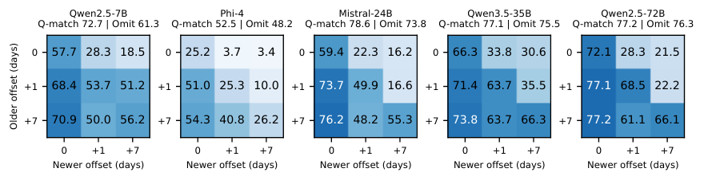

Retrieval-augmented question-answering systems often attach a "collection date" to retrieved web snippets, meaning the day the content was fetched, not the day it was last changed. This paper finds that this field can steer a large language model's answer the wrong way. Suppose the question is "Which team did a certain ice hockey player play for on July 16, 2025?" and the context holds both an older Wikipedia revision (listing his old team) and a newer one (listing his new team). The texts and revision timestamps of both stay fixed, and only the collection dates are swapped: the older revision gets a collection date exactly equal to the question date, and the newer one gets the following day. On 595 Wikipedia pages, this swap lowers the exact-match rate for the newer answer by 37.6 to 51.4 percentage points across five open-weight language models; explicitly telling the model "do not choose answers by collection time" still leaves losses of 37.9 to 50.8 points.
Teams building retrieval-augmented question answering, especially those that place several versions or several sources in the same context, should read this. It shows that metadata is not harmless extra information. Models treat "this date matches the question date" as a strong signal even when the date has nothing to do with whether the content is current. The controls are thorough: the effect survives changes to prompt wording, date format and the use of fictional entities. The limitation is that the paper cannot say how often "collection date exactly equals question date" happens in real systems. The two commercial API models are barely affected, so the conclusion applies mainly to open-weight models.
What problem is it actually solving?
Temporal question answering involves three different times. The question date is the moment the question asks about, such as "which team on July 16, 2025". The revision timestamp is when a version's content was written. The collection date is when the system fetched that version. Fetching an old version does not make its content newer, so in principle the collection date should not affect which version matches the question date.
In practice such metadata is common. Some web-scraping tools return a fetch-time field with their results, and retrieval systems may put cache times into the prompt as well. The paper asks: once both versions are already in the context, can changing only the collection dates make the model choose the wrong answer?

How the experiment is set up
The data is 595 Wikipedia pages, each with two revisions in which a recorded fact changed, such as an athlete moving to a new team. The later question date falls after the newer revision, so the correct answer is the content of the newer revision. Each input contains the question, the texts and revision timestamps of both versions, and a collection-date field.
The core manipulation is the "question-date swap". In one assignment, the newer revision's collection date equals the question date and the older revision's is one day later. In the other, it is the reverse. Both assignments use the same pair of dates, the texts, timestamps and question stay fixed, and both orderings of the two versions are tested and averaged. The metric is exact match, the share of answers that, after normalization, are identical to the reference answer.
Five open-weight models are tested: the 7-billion and 72-billion-parameter versions of Qwen2.5, Phi-4, the 24-billion-parameter Mistral and the 35-billion-parameter Qwen3.5. The authors also repeat the main experiment on 128 non-overlapping pages and use those pages to test reasoning modes and two commercial API models.
Results: change only the date and the answer follows
When the older revision gets the question date, all five models answer the newer fact far less often, and the share answering with the older fact rises in step.
| Model | Newer revision gets question date | Older revision gets question date | Drop |
|---|---|---|---|
| Qwen2.5-7B | 68.4% | 28.3% | 40.1 points |
| Phi-4 | 51.0% | 3.7% | 47.3 points |
| Mistral-24B | 73.7% | 22.3% | 51.4 points |
| Qwen3.5-35B | 71.4% | 33.8% | 37.6 points |
| Qwen2.5-72B | 77.1% | 28.3% | 48.7 points |
The table shows exact-match rates for the newer answer over 595 pages. Phi-4 is almost completely misled, falling from about half correct to under 4%. On the separate 128 non-overlapping pages, the drop is 38.3 to 53.1 points, so the result replicates.

Ruling out other explanations
The authors use a series of controls to check whether something else causes this.
First, do models simply prefer the version collected earlier? On 497 pages, the authors set the other date to the day before the question date, so the version that gets the question date is now the one collected later. The drop is still 29.0 to 39.6 points, so it is not just a preference for earlier collection.
Second, is the prompt ambiguous? On 128 pages the authors tried seven prompt variants, including an explicit instruction not to choose by collection time, a statement that the snippets are archived revisions of the same page, a renamed field, and moving the field below the text. The loss remains under every variant, at least about 36 points.
Third, do models answer from memory, or is it just identical strings? Repeating the test on 128 records about fictional entities (for example, a made-up company moving its headquarters from city A to city B) produces drops of 92.2 to 95.7 points, so the model does not need to know the answer beforehand. Writing the question date with English month names, so it no longer matches the numeric format of the collection date, still leaves losses of 31.6 to 53.1 points.
Fourth, distant dates have almost no effect. When both collection dates fall months after the question and differ by only seven days, swapping them changes results by just 0 to 6.2 points. So what matters is a collection date that equals or sits close to the question date.
Reasoning modes and commercial models
With thinking mode on, Qwen3.5-35B's loss from the swap falls from 30.1 to 11.1 points. Both random seeds show the reduction, but the loss does not disappear. Other models with built-in reasoning vary widely: Ministral-3-14B loses 13.1 points and Nemotron-3-Nano loses 51.8, so "turn on reasoning and it is solved" does not hold.
The two commercial API models, GPT-6 Astra and Claude Fable 5.1, show swap effects of only 0.4 to 2.3 points on the same 128 pages, and a loss cannot be statistically confirmed. On the fictional records, Claude Fable 5.1 at low reasoning effort drops 14.1 points, but nearly all of those responses mention both answers or add extra text; only one response gives the older answer alone.
Another practical finding: programmatically selecting "the latest version before the question date" before generation, and giving the model only that version, improves accuracy by 15.0 to 30.9 points over giving it both versions. This shows that having several versions in the context confuses models even without a collection-date field.
Limitations as I see them
First, the setting is constructed. The paper deliberately sets collection dates equal to or right next to the question date, and how often such a coincidence happens in real systems is unclear. The authors also tested real fetch dates (six months to two years after the question date): showing that field lowered exact match by 3.5 to 15.2 points compared with not showing it, much smaller than in the swap experiment.
Second, the main experiment covers only single factual changes on Wikipedia, such as teams or positions. In more complex multi-document reasoning, the effect of metadata may differ.
Third, the conclusion applies mainly to open-weight models. The two commercial API models are barely affected, and why they are robust remains an open question.
How a team could try this
- Check whether your retrieval-augmented prompts include fields such as fetch time, cache time or publication date, and confirm whether the model really needs each one.
- Run an audit the way the paper does: keep texts and revision timestamps fixed, swap the date fields of two versions, and see whether the answer changes.
- If your system knows each version's identity, pick the latest valid version by revision time before generation instead of handing several versions to the model to choose from.
- Do not expect an instruction to "ignore this field" in the prompt to remove the effect; the paper shows it barely helps.
One-sentence conclusion
Seemingly harmless metadata such as collection dates noticeably changes open-weight models' answers in temporal question answering, and asking them to ignore it does not help; the safest approach is to choose the version before generation or not show the model irrelevant dates at all.
| Dimension | Assessment |
|---|---|
| Importance | Medium-high. Retrieval-augmented systems commonly attach all kinds of date metadata |
| Novelty | Medium. The core is one clean controlled experiment with careful controls |
| Evidence | Strong. Five open-weight models, two disjoint page sets, seven prompts, fictional-entity and format controls |
| Engineering cost | Low. The audit method is simple and can be applied directly to your own system |
| Worth trying | Yes, use its swap method to audit your own prompt templates |
Discussion
Add experiment details, reproduction notes or a different take. Requires a GitHub sign-in.
Loading the discussion…